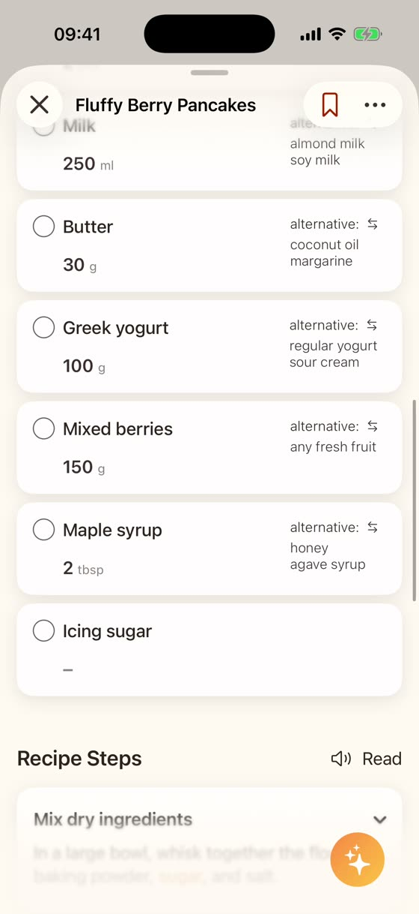

Ingredient substitutes: common swaps and in-recipe alternatives
No buttermilk, no sour cream, no baking powder, and the recipe calls for it. Here are common swaps from the kitchen cupboard. In ReciPics, many recipes also show alternatives for their own ingredients, and you swap one in with a tap.
Common swaps
| Instead of | Use |
|---|---|
| Buttermilk (1 cup) | 1 cup milk + 1 tbsp lemon juice or white vinegar; let it stand 5–10 minutes. |
| Sour cream | Plain Greek yogurt, same amount. |
| Baking powder (1 tsp) | ¼ tsp baking soda + ½ tsp cream of tartar. |
| Heavy cream (1 cup, for cooking) | ¾ cup milk + ¼ cup melted butter. It does not whip. |
| Egg in baking (1 egg) | 1 tbsp ground flaxseed + 3 tbsp water, soaked 5 minutes; or ¼ cup applesauce in cakes and muffins. |
| Cornstarch (1 tbsp, to thicken) | 2 tbsp all-purpose (wheat) flour. Contains gluten. |
| White wine (in cooking) | Chicken or vegetable stock with a splash of white wine vinegar or lemon juice. |
| Honey | Maple syrup, same amount. The taste changes a little. |
| Yeast | Active dry and instant yeast swap 1:1. 1 packet dry yeast (7 g) ≈ 21 g fresh yeast. |
| Brown sugar (1 cup) | 1 cup white sugar + 1 tbsp molasses. |
Suggestions only; check allergens yourself, e.g. gluten, egg, milk, nuts. Swaps can change taste, texture and baking results.
In the app, the recipe shows an “alternative:” line for many of its own ingredients; tap it to swap. No alternative listed? Ask the assistant inside the recipe. More below.

Real screens from the app. The example recipe is from our own site recipics.app.
Alternatives next to the ingredient
Many ingredients in a ReciPics recipe have an “alternative:” line with up to three common substitutes. Tap it and pick what you have. The ingredient in the list changes, and the amount stays as it was.
In the steps, ingredients with alternatives are highlighted. Tap one there, pick a substitute, and ReciPics changes the name in the ingredient list and in every step, so the steps match what you actually use.
No alternative listed? Ask the assistant
The sparkle button in a recipe opens the assistant. Tap “Substitute an ingredient” or ask in your own words, by typing or by voice, for example “I have no buttermilk, what can I use?”. The assistant answers for this recipe and can change it for you: rename an ingredient, adjust an amount or rewrite a step. Changed rows are marked, and you can undo the change.
How to use it
- Save the recipe in ReciPics: paste a link from a recipe site, use the Share button, or photograph a recipe card or cookbook page.
- Open the recipe and check the ingredients before you shop or start cooking.
- Tap an alternative, or ask the assistant. You can also edit any ingredient by hand.
Then put the ingredients on your grocery list, or start cooking with the screen on and the steps read aloud.
Questions
Where do the alternatives come from?
When ReciPics creates a recipe from a photo, from your voice or as a suggestion, and for some imports, AI adds up to three common substitutes per ingredient. Recipes imported from a recipe website often have none; then ask the assistant.
Does the amount change when I swap?
Not with the alternative line: only the ingredient name changes. Check whether the amount still fits, change it by hand, or ask the assistant, which can adjust amounts and steps.
Can I rely on a substitute for baking or for allergies?
Treat substitutes as suggestions. They can change taste, texture and baking results, and AI can make mistakes. If you have allergies or intolerances, always check the ingredients yourself.
Can I undo a change?
Yes. The assistant's most recent change can be undone with Undo in the assistant. To swap back an alternative, tap the alternative line again and pick the original ingredient.
Is ReciPics only for iPhone?
Yes. ReciPics is an iPhone app for iOS 26 or later. There is no Android or web version.
Keep your recipes in one cookbook
ReciPics is a cookbook app for iPhone. Save recipes from websites, cookbook photos and handwritten cards, scale servings and build a grocery list. Recipes from the ingredients you have · Recipe scaler
Assistant answers count toward the app's AI allowance, which is limited without Premium. For new users without a paid plan, the number of link imports per month is limited; the app shows how many you have left.
To answer, your question, the recipe and for spoken questions the recording are sent to our servers and service providers, including our AI provider OpenAI (USA); see Privacy.
Get ReciPics on the App StoreFor iPhone with iOS 26 or later.